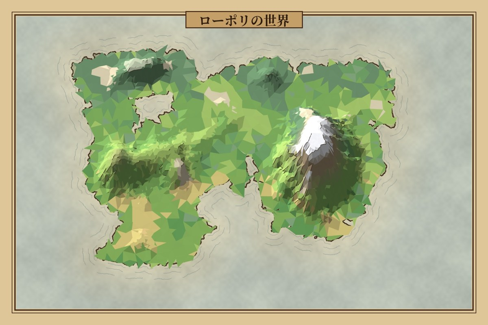
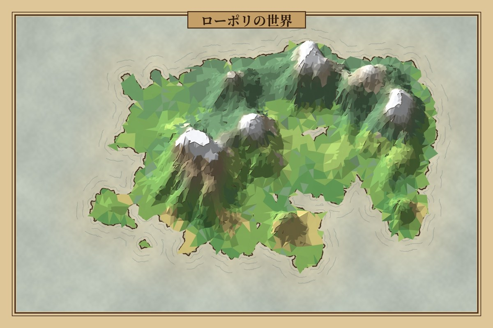

ローポリで地形を描く(第1版・11-20)
概要: ユーザー案どおり、地形を「形をデフォルメした立体」にして、左斜め上から光を当てた陰を面ごとに計算して描きました。山も低地も同じ方法で、奥から手前へ重ね、色は下地(群系)で決めています。
やったこと
- デフォルメ: 平均でならさず、山は頂・稜線を拾って高く尖らせ、低地は大きくならして低く平らにしました。
- 立体化: 山は細かい三角、低地は大きな三角で面を作り、奥から手前へ重ねました。
- 陰: 各面の向きと左斜め上の光で明るさを決め、少数の段にしました。陰の差が大きい辺に細い墨線(稜線)を引きました。
- 色: 群系の色を基本に、高いほど岩・雪へ。
世界A: 記事再現の世界3

絵番号 E106
世界B: 記事再現の世界7

絵番号 E107
目で見た評価(各1枚)
- 良い点: 光が左上から当たる立体感が出て、山の陰と日向がはっきり分かる。一枚の絵としてまとまり、部品の浮きは無い。
- 悪い点: 山が丸い塊に見え、鋭い稜線や山並みの連なりになっていない。墨線の稜線は弱い。緑の低地は三角の細かい寄せ集めに見える。森・砂漠などの地形ごとの描き分けはまだ無い。
限界・未確認
- 各1枚・目視のみ。iPhoneでの見え方は未測定。
- ユーザー案の「一番高い稜線から手前へ断面を並べて立体にする」は未実装(今は高さの地図から直接面を作っている)。
次: 稜線から手前へ断面を並べて山並みの立体を作る方式に替え、稜線を鋭くする。